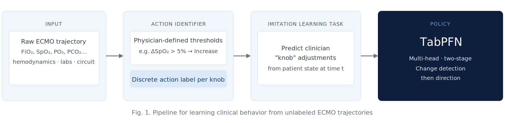
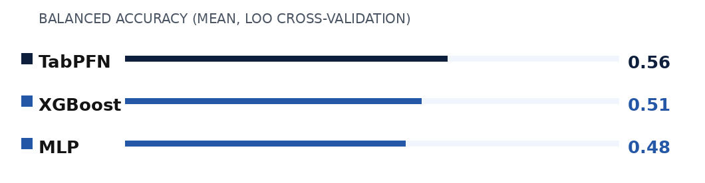
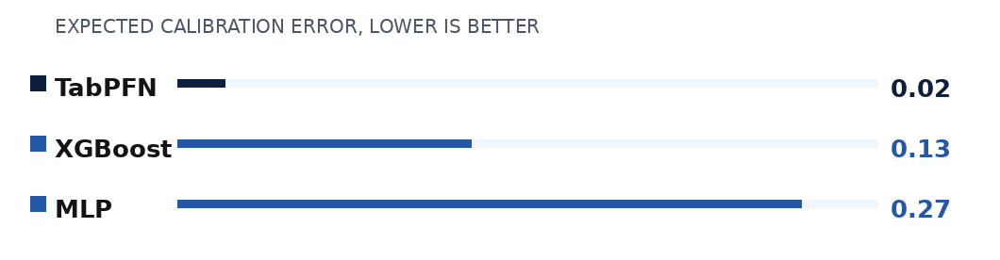

Imitation Learning for Clinical Decision Support in Pediatric ECMO
Fateme Golivand Darvishvand, Michael Skinner, Saurabh Mathur, Ameet Soni, Phillip Reeder, Kristian Kersting, Lakshmi Raman, Sriraam Natarajan · AIME 2026
Pediatric critical care is a dynamic, high-stakes process involving constant monitoring and adjustments in life-saving treatments. We frame clinical decision-making as imitation learning from observational data, in which actions are not directly observed. We find that the TabPFN-based approach consistently outperforms classical baselines, supporting its use as a strong clinician-behavior baseline for pediatric ECMO decision support.
Key Challenges in Pediatric ECMO
Building decision support for this domain is complicated by the incomplete, difficult-to-formalize nature of pediatric-specific protocols, plus the ethical and practical impossibility of experimentation on critically ill children.
- Irregular time between actions. Clinical observations arrive at irregular intervals; we aggregate trajectories into hourly windows.
- Concurrent, high-dimensional action space. Several parameters can be changed simultaneously, without explicit annotations.
- No explicit intervention labels. Interventions aren't timestamped in the raw dataset; we infer each action from its delta over a 1-hour window.
- Severe data scarcity. Many observations for few patients — an imbalance of features vs. examples.
- No explicit reward signal. Trajectory success must be inferred from patient outcome; evaluating new strategies on live patients is unfeasible.
Imitation Learning Pipeline
Unlike standard reinforcement learning, which requires active environmental interaction, offline imitation learning lets us exploit expert demonstrations already present in historical clinical records.

Fig. 1. Pipeline for learning clinical behavior from unlabeled ECMO trajectories. Raw physiologic telemetry is processed into discrete action labels using physician-defined thresholds, formulating an imitation learning task: predicting clinician "knob" adjustments from patient state.
Actionable features (knobs)
A discrete action is identified when the absolute change within a 60-minute window exceeds the specified threshold.
| Knob | Threshold | Action space |
|---|---|---|
| Arterial PO₂ | 25 mmHg | Increase / Same / Decrease |
| Arterial PCO₂ | 5 mmHg | Increase / Same / Decrease |
| SpO₂ | 5 % | Increase / Same / Decrease |
| FiO₂ | 10 % | Increase / Same / Decrease |
Pediatric ECMO Cohort
78 pediatric ECMO trajectories from Children's Medical Center, Dallas. Cases with congenital heart disease were excluded due to the complexity of specialized management.
| Metric | Value |
|---|---|
| Patient trajectories | 78 |
| Average patient age | 4.66 years |
| Average trajectory length | 215 hours |
| State features per hour | 48 (23 clinical variables + deltas + ECMO type + on-ECMO indicator) |
| Actionable knobs | 4 (PO₂, PCO₂, SpO₂, FiO₂) |
| Source | Children's Medical Center, Dallas |
| Exclusion criterion | Congenital Heart Disease cases |
State features
For each variable, we include the mean value within a 60-minute window and its delta relative to the previous window. Heart rate (HR) and mean arterial pressure (ARTm) are age-normalized.
| Category | Features |
|---|---|
| Hemodynamics | Mean Arterial Pressure (ARTm), Heart Rate (HR), SpO₂, Cerebral Oximetry (rSO₂-1, rSO₂-2) |
| ECMO Circuit | Blood Flow (mL/kg/min), Sweep Gas CO₂ Flow, Sweep Gas O₂ Flow, FiO₂ – ECMO, Volume Sensor |
| Ventilator | Mean Airway Pressure (PAW), PEEP, Oxygen Concentration (FiO₂), Tidal Volume, End-tidal CO₂ (etCO₂) |
| Laboratory | Arterial PO₂, PCO₂, pH, Base Excess, Lactate, Ionized Calcium, Total CO₂, INR |
Evaluation Across Three Questions
We evaluate generalization performance, calibration, and alignment with clinician decisions using leave-one-out (LOO) cross-validation, quantified with balanced accuracy and macro-F1 given the inherent class imbalance.
Q1: Do policies generalize?
TabPFN achieves the highest mean balanced accuracy across the majority of actions, consistent across all four action knobs (PO₂, PCO₂, SpO₂, FiO₂) — suggesting it's more resilient to the class imbalance and generalizes more effectively to held-out patients.

Q2: Are policies calibrated?
Expected Calibration Error (ECE) summarizes the average gap between a model's stated confidence and its observed accuracy. TabPFN consistently achieves a lower ECE than the MLP and XGBoost baselines — its in-context posterior probabilities closely match empirical accuracy, giving reliable confidence estimates.

Q3: Where do policies disagree with clinicians?
We identify regions of highest model-expert disagreement by training shallow decision trees on residual prediction errors. The table shows the most frequent features in high-disagreement states, as the number of times each was selected across all knobs.
| Feature | MLP | TabPFN | XGBoost |
|---|---|---|---|
| FiO₂ | 2 | 5 | 5 |
| SpO₂ | 1 | 5 | 3 |
| pH | 2 | 3 | 2 |
| PO₂ | 3 | 2 | 1 |
| PCO₂ | 2 | 3 | 1 |
| Lactate | 3 | 1 | 1 |
Oxygenation-related signals — FiO₂ and SpO₂ — consistently define where model predictions deviate from clinician actions. Models deviate in different regions of the state space, motivating future expert review of high-disagreement states.
Conclusion
We presented an imitation learning framework to model clinical decision-making in pediatric ECMO, mapping patient states to concurrent clinical interventions via inferred action labels and a factorized, hierarchical policy architecture. TabPFN consistently outperforms traditional gradient-based baselines, suggesting it can serve as an effective clinician-behavior baseline in challenging critical care settings — its broad tabular prior, from pretraining on millions of synthetic datasets, enables probabilistic inference in a single forward pass without dataset-specific gradient training or hyperparameter tuning.
Future work
- Analyze whether model-clinician disagreements correlate with patient outcomes, such as risk of neurological injury.
- Explore policy improvement by incorporating expert-defined rewards.
- Perform systematic analysis of high-disagreement extracted rules and use them to elicit expert feedback for policy refinement.
Citation
@inproceedings{golivand2026ecmo,
title = {Imitation Learning for Clinical Decision Support in Pediatric {ECMO}},
author = {Golivand Darvishvand, Fateme and Skinner, Michael and Mathur, Saurabh
and Soni, Ameet and Reeder, Phillip and Kersting, Kristian
and Raman, Lakshmi and Natarajan, Sriraam},
booktitle = {Proceedings of the 24th International Conference on
Artificial Intelligence in Medicine (AIME)},
year = {2026},
note = {Supported by NIH award R01NS133142}
}
Acknowledgements
We gratefully acknowledge the support of NIH award R01NS133142.